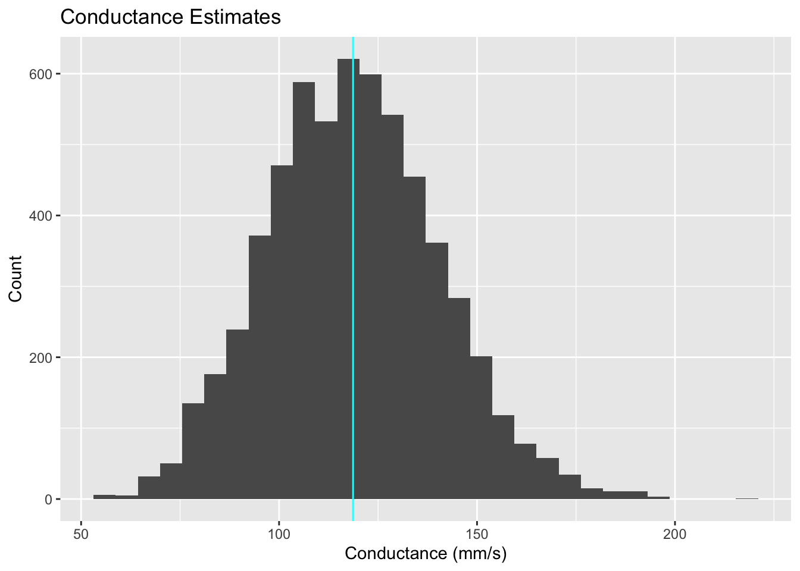
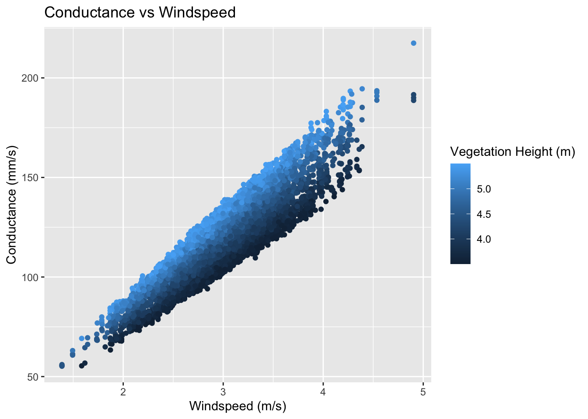

── Conflicts ────────────────────────────────────────── tidyverse_conflicts() ──
✖ tidyr::extract() masks sensitivity::extract()
✖ dplyr::filter() masks stats::filter()
✖ dplyr::lag() masks stats::lag()
✖ dplyr::src() masks sensitivity::src()
ℹ Use the conflicted package (<http://conflicted.r-lib.org/>) to force all conflicts to become errors
library(gridExtra)
Attaching package: 'gridExtra'
The following object is masked from 'package:dplyr':
combine
library(purrr)library(ggpubr)library(here)
here() starts at /Users/nmoraes/Documents/MEDS/Spring2025/EDS230/Homework/sobol-assignment
A. Use the sobel approach to generate parameter values for the 4 parameters
# Source Catm functionsource(here("Catm.R"))# generate two examples of random number from parameter distributionsnp <-1000k_o <-rnorm(mean =0.1, sd =0.1*0.01, n = np)k_d <-rnorm(mean =0.7, sd =0.7*0.01, n = np)v <-rnorm(mean =3, sd =0.5, n = np)height <-runif(min =3.5, max =5.5, n = np)X1 <-cbind.data.frame(k_o, k_d, v, height = height)# repeat samplingk_o <-rnorm(mean =0.1, sd =0.01*0.1, n = np)k_d <-rnorm(mean =0.7, sd =0.07*0.1, n = np)v <-rnorm(mean =3, sd = .5, n = np)height <-runif(min =3.5, max =5.5, n = np)X2 <-cbind.data.frame(k_o, k_d, v, height = height)# Sobol object approach implemented by jansensens_Catm_Sobol <-sobolSalt(model =NULL, X1, X2, nboot =100)
B. Run the atmospheric conductance model for these parameters
# run model for all parameter setsparms <-as.data.frame(sens_Catm_Sobol$X)colnames(parms) <-colnames(X1)res <-pmap_dbl(parms, function(k_o, k_d, v, height) {Catm(v = v, height = height, k_o = k_o, k_d = k_d) })sens_Catm_Sobol <- sensitivity::tell(sens_Catm_Sobol, res, res.names ="ga")# main effect: first order indicesrow.names(sens_Catm_Sobol$S) <-colnames(parms)sens_Catm_Sobol$S
C. Plot conductance estimates in a way that accounts for parameter uncertainty
# Plot conductance accounting for parameter uncertaintyboth <-cbind.data.frame(parms, gs = sens_Catm_Sobol$y)# look at overall gs sensitvity to uncertaintyggplot(both, aes(x = gs)) +geom_histogram() +geom_vline(xintercept =mean(both$gs), col ="cyan") +labs(title ="Conductance Estimates",x ="Conductance (mm/s)",y ="Count" )
`stat_bin()` using `bins = 30`. Pick better value with `binwidth`.

D. Plot conductance estimates against windspeed use the parameter that is 2nd in terms of total effect on response
# look at response of conductance to the two interesting variables (v and height)ggplot(both, aes(v, gs, col = height)) +geom_point() +labs(title ="Conductance vs Windspeed",y ="Conductance (mm/s)", x ="Windspeed (m/s)",color ="Vegetation Height (m)")

E. Estimate the Sobel Indices for your output
# main effect: first order indicesrow.names(sens_Catm_Sobol$S) <-colnames(parms)sens_Catm_Sobol$S
# Both the main effect and total effect can tell us something about how the parameter influences resultsprint(sens_Catm_Sobol)
Call:
sobolSalt(model = NULL, X1 = X1, X2 = X2, nboot = 100)
Model runs: 6000
Model variance: 469.0918
First order indices:
original bias std. error min. c.i. max. c.i.
k_o -0.01561429 -0.0014798551 0.03146046 -0.08370865 0.04512329
k_d -0.01427147 -0.0016389723 0.03213164 -0.08385955 0.04905657
v 0.81749002 0.0002475351 0.01033214 0.79733582 0.84331882
height 0.14807632 -0.0047056149 0.03335559 0.08208443 0.21364046
Total indices:
original bias std. error min. c.i. max. c.i.
k_o 0.002929665 -2.078339e-06 0.0001684278 0.002619140 0.003279658
k_d 0.002893651 3.192165e-06 0.0001830826 0.002481303 0.003190179
v 0.845691312 2.703084e-03 0.0317263955 0.780247060 0.907037961
height 0.183835698 -3.419031e-04 0.0096682888 0.164591141 0.204556477
F. Comment on what this tells you about how atmospheric conductance and its sensitivity to variation in windspeed differs in this setting as compared to the setting that we examined in class where windspeed was lower and less variable and vegetation was taller
In the assignment setting, where wind speed is higher and more varied and vegetation was shorter, conductance was more dependent on these changes and paramters (of windspeed and the vegetation height). In contrast, the in-class example - where windspeed was lower and less varied - conductance was most impacted by the kd and ko parameters. It can also be seen that these parameters, of kd and ko, did not have a relatively great impact.